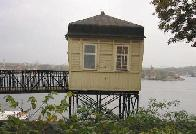
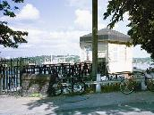
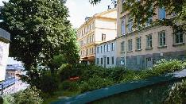
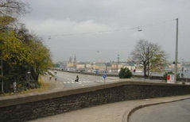
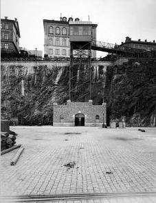
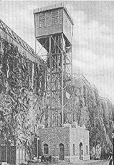
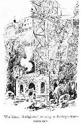

Södermalm i tid och rum
15. Stadsgårdshissen
2001

2001


Stadsgårdshissens kur i väntra kanten av bilden,
som är tagen mot öster.Fjällgatan 23 till höger.


Katarinavägen mot väster, sedd från
Fjällgatan 23

Stadsgårdshissen sedd nerifrån Stadsgården. Till höger uppe på berget finns ännu Stentolvan kvar.

Intill Söderbergs trappor uppfördes 1907 Stadsgårdshissen - "en fullt modern, med elektricitet driven hiss - av stor betydelse i kommunikationshänseende, rymmer två av varandra oberoende hisskorgar, vardera med plats för tio passagerare", heter det i presentationen av nyheten i "livar 8:de dag". Hissen användes huvudsakligen av hamnarbetarna i Stadsgården, 1957 önskade granskarna av stadens räkenskaper att den ganska olönsamma rörelsen skulle nerläggas, liknande påstötningar gjordes f.ö.redan några år efter det att hissen byggts. Särskilt betydelsefull blev den väl aldrig men är ändå ännu i bruk och får väl betraktas som en nödvändig bekvämlighet trots det dåliga ekonomiska utfallet. I början kallades hissen Sofiahissen (Katarina och Maria hade ju sina hissar), initiativtagare till anläggningen var "Panama-konsuln" E. W. Djurlingsom bodde vid Fjällgatan. 1960 utbyttes en av de gamla "originalgondolerna" mot en modern automatisk hiss.
Omkring sekelskiftet sträckte sig den utsprängda delen av Stadsgården ungefär fram till Söderbergs trappor och där låg då några vändskivor för järnvägens hamnspår.
